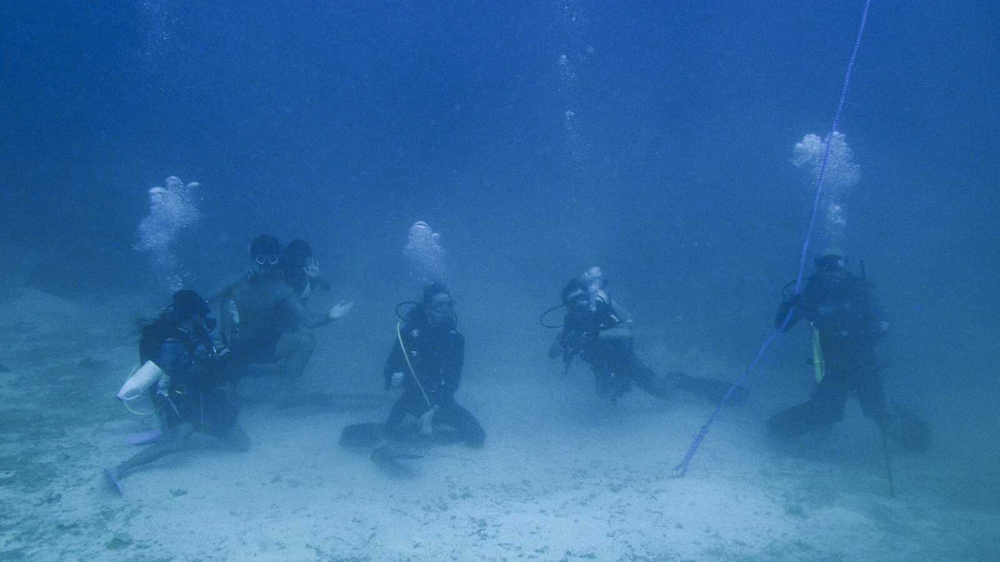

SSI Open Water · Certified to 18 m
Open Water course in Siargao
Theory in the MySSI app, pool training, then four ocean dives. Gear, boat and marine fee included.
Your license to dive anywhere
The SSI Open Water Diver course is the certification most people start with. You study the theory in the MySSI app before or during your stay. Then you train in our glass-walled pool, and make four ocean dives on our reefs. At the end you are certified to 18 m, and you can dive with a buddy anywhere in the world. There are no fixed start days: we plan the pool sessions and dive days around you and the group.
How it works
- Theory in the MySSI app, before or during your stay.
- Pool training in our glass-walled pool.
- Four ocean dives on our reefs, with your instructor.
- A short swim and float test.
What it costs
₱25,000 per person, or ₱35,000 for a private course. Gear, the boat and the marine fee are included. Booking takes about ten minutes: message us on WhatsApp, fill in the registration form once and send the ₱6,000 deposit. See how booking works.
Start your Open Water course
Tell us when you're in Siargao and we'll plan the days around the tide, the weather and your schedule. Never dived at all? You can also try scuba first.
Open Water questions
How long does the course take?
It depends on the group and the weather. Message us with your dates and we'll plan it with you.
What do I need to start?
To be fit to swim. You'll do a short swim and float test with us. The minimum age is 10.
What does the price include?
All scuba gear, the boat and the marine fee. Theory is in the MySSI app, with a free account.
Is SSI recognized like PADI?
Yes. SSI certifications are recognized by dive centers around the world, and we welcome PADI divers on every trip. The skills and depth limits of an SSI Open Water Diver match what other agencies teach at that level.
How much is the deposit?
₱6,000 for courses. Your slot is secured once the deposit arrives, and we send the payment details on WhatsApp.
Can I learn more than Open Water in one stay?
Yes. Open Water + Advanced is ₱45,000, which is ₱5,000 less than booking them separately. It is nine ocean dives and you leave certified to 30 m.
See you on the boat.
Message us with your dates and what you'd like to do. We usually reply on WhatsApp within minutes.